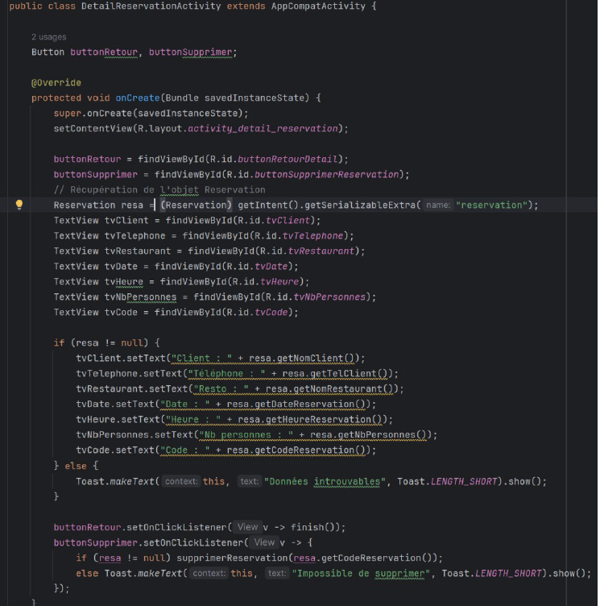
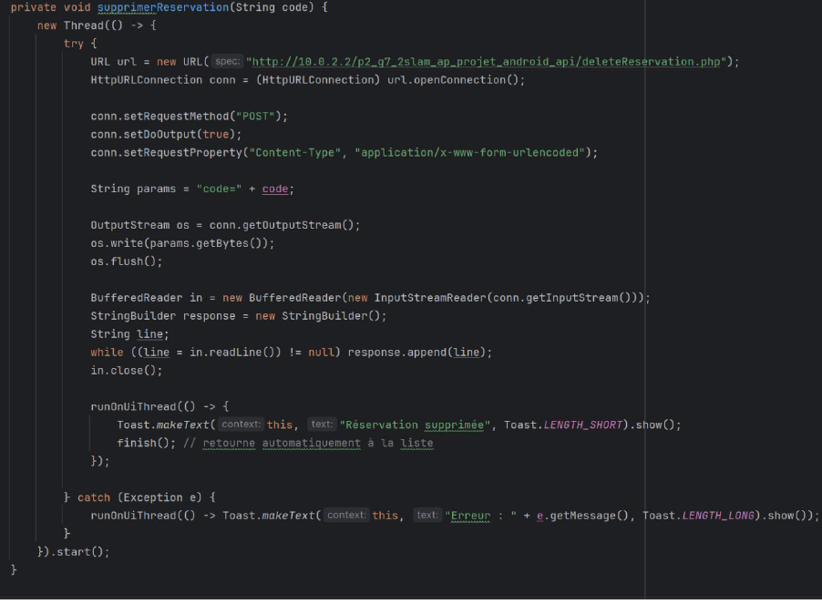
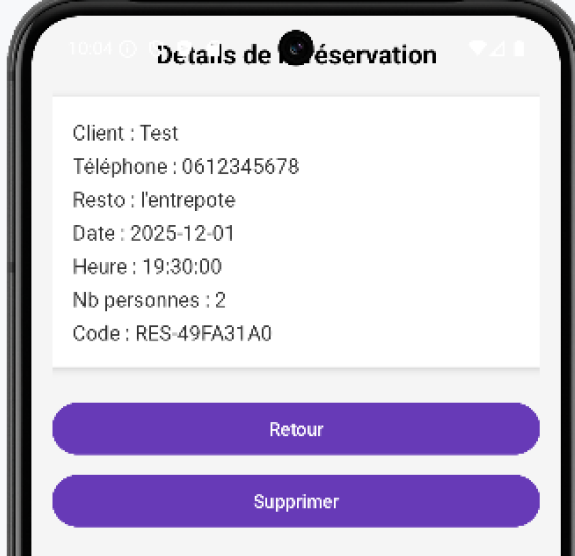
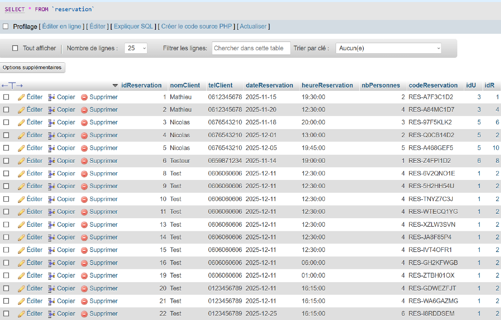

Ticket 7 – Android : Connexion à l’API de suppression
Dans le cadre du Projet 2 Android – Itération 3, j’ai réalisé le
Ticket 7 permettant de supprimer une réservation depuis l’application
Android en se connectant à l’API développée précédemment.
Ce développement a été effectué sur la branche iteration3_ticket7.
L’activité affiche les détails d’une réservation et propose à l’utilisateur deux actions :
Retour et Supprimer.
Initialisation de l’UI
- Dans onCreate(), l’interface graphique est initialisée avec setContentView.
- Les boutons Retour et Supprimer sont liés via findViewById.
- L’objet Reservation est récupéré depuis l’Intent et ses informations
sont affichées dans plusieurs TextViews (nom, téléphone, restaurant, date, heure, nombre de personnes, code de réservation).
- Si l’objet Reservation est nul, un Toast informe l’utilisateur.
Méthode supprimerReservation()
Le bouton Supprimer appelle la méthode supprimerReservation()
qui envoie une requête HTTP POST à l’API deleteReservation.php pour supprimer
la réservation correspondante.
- La requête est exécutée dans un thread séparé pour ne pas bloquer l’interface.
- La connexion est configurée avec HttpURLConnection et Content-Type
application/x-www-form-urlencoded.
- Le code de réservation est envoyé dans le corps de la requête sous le paramètre code.
- La réponse du serveur est lue via un BufferedReader et peut être traitée.
- Après exécution, runOnUiThread met à jour l’UI : un Toast confirme la suppression et finish() ferme l’activité.
- En cas d’erreur, un Toast affiche l’exception.


Test fonctionnel
- Depuis l’écran d’accueil, cliquez sur Voir Liste des Réservations.
- Sélectionnez une réservation disponible dans la liste.
- Le bouton Supprimer est visible. Cliquez dessus.
- L’écran revient automatiquement à la liste des réservations.
- Vérifications :
- La réservation reste visible dans l’UI (problème à corriger dans un ticket futur).
- Pas besoin de rentrer le code de réservation pour la supprimer.
- Un Toast confirme la suppression.
- Dans la base de données, la réservation a bien été supprimée.
voir image compte rendue

